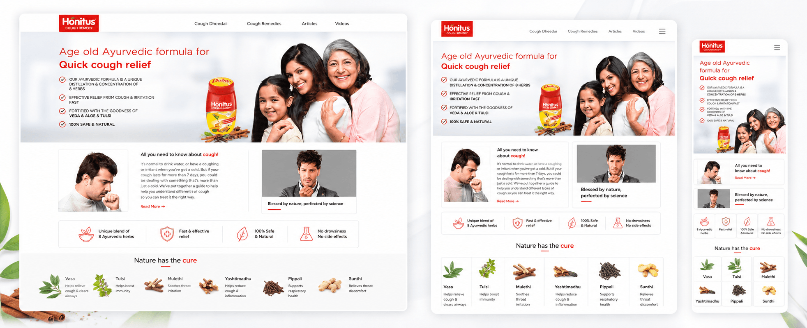
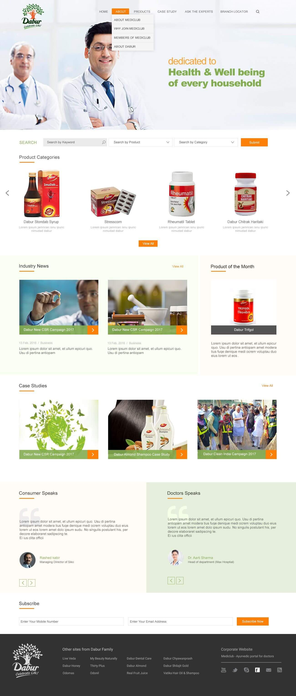
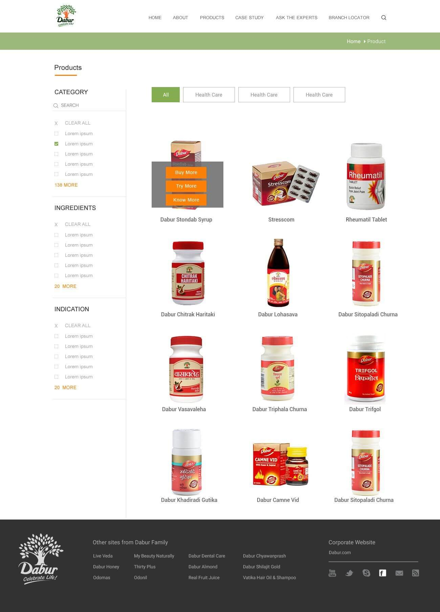
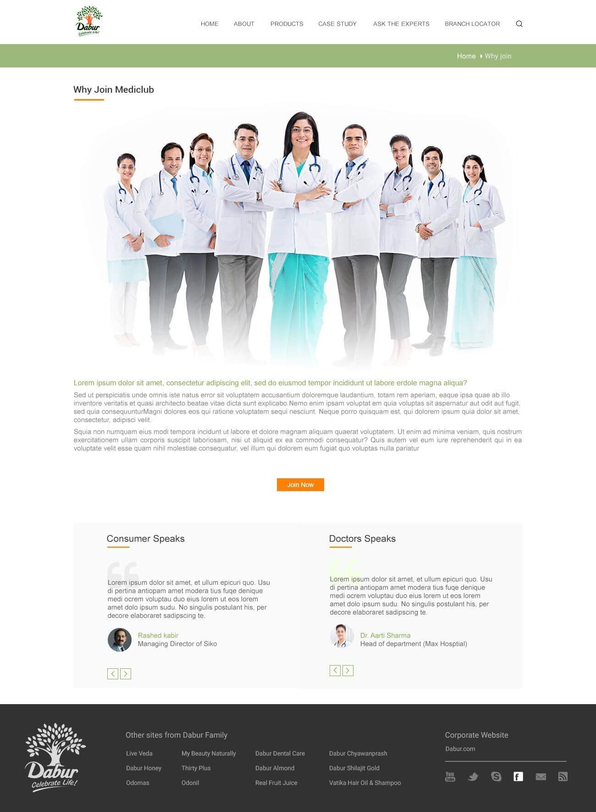
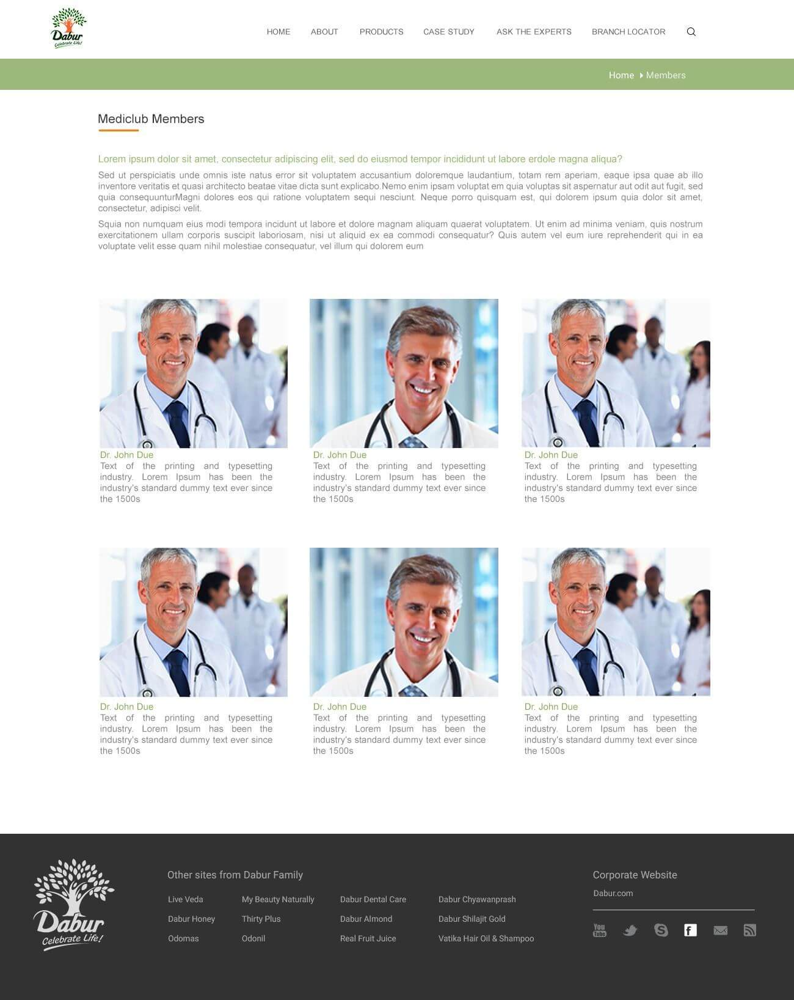

A large health portfolio needs meaningful filters and consistent product information—not an undifferentiated catalogue.
← Back to workKnowledge for care.
Dabur Mediclub · Professional Health Portal
Knowledge for care.
Connected in one place.

Project overview
More than a product list.
A professional knowledge network.
Healthcare professionals need precise routes to products, ingredients, indications, evidence and expert perspectives.
We organised Mediclub as a professional portal connecting Ayurvedic product discovery with member expertise, case studies, industry information and branch access.
- Platform
- Professional Portal
- Content
- Products + Knowledge
- Community
- Mediclub Members
- Build
- Responsive Web
The organising idea
Find the product.
Understand the context.
Search and filters make a broad Ayurvedic portfolio usable by product, category, ingredient and indication.
Expert voices, case studies and professional membership extend the experience from reference tool to connected health platform.
The information challenge
Make depth navigable.
Keep trust visible.
Membership, expert perspectives and applied case studies must feel connected to the product experience.
The professional journey
Search. Study.
Connect. Apply.
- 01
Search
Find relevant products by keyword, category, ingredient or indication.
- 02
Understand
Move from product recognition to useful supporting information.
- 03
Learn
Explore case studies, industry news and expert-led perspectives.
- 04
Join
Connect with the Mediclub professional community and branch network.
The platform in practice
Four needs.
One connected system.
The experience balances a broad product library with knowledge, membership and professional discovery while keeping every page visually consistent.
Portal homepageSearch, products, news, cases and voices

Product discoveryFilters by category, ingredient and indication

Why joinProfessional value and community proof

Member networkDiscover the professionals in Mediclub

The platform architecture
Useful at first click.
Deeper at every layer.
Multi-path search
Keyword, product and category routes serve different starting points.
Clinical taxonomy
Category, ingredient and indication filters make the portfolio meaningful.
Knowledge layer
Case studies and industry content connect products to wider context.
Professional layer
Expert voices, membership and branch tools create an active network.
Designed for clarity
Calm enough to trust.
Structured enough to use.
Open white space, restrained greens and precise orange actions support professional readability while helping key searches and next steps remain visible.

The outcome
A portfolio made useful.
A community made visible.
A connected professional platform that brings product reference, Ayurvedic knowledge, expert participation and member discovery into one coherent digital experience.
Faster discovery
Multiple search and filter routes reduce friction across the product portfolio.
Richer context
Knowledge content supports deeper understanding beyond the product pack.
Connected community
Membership and expert voices give Mediclub a professional human layer.
Knowledge organised.Care better connected.
Building a professional platform?